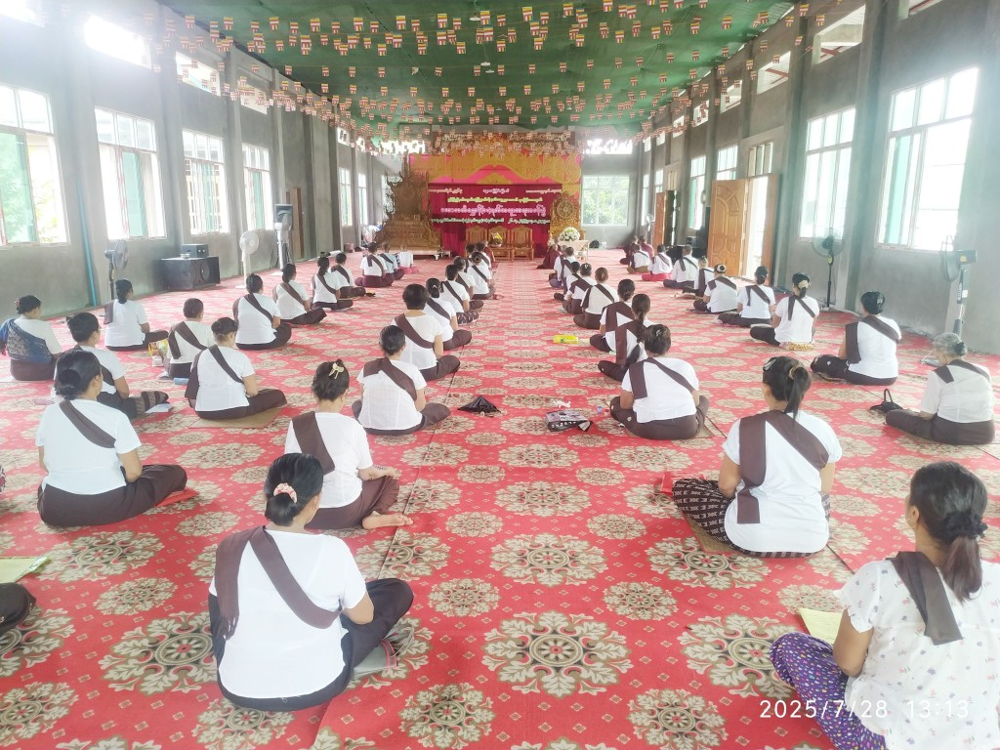
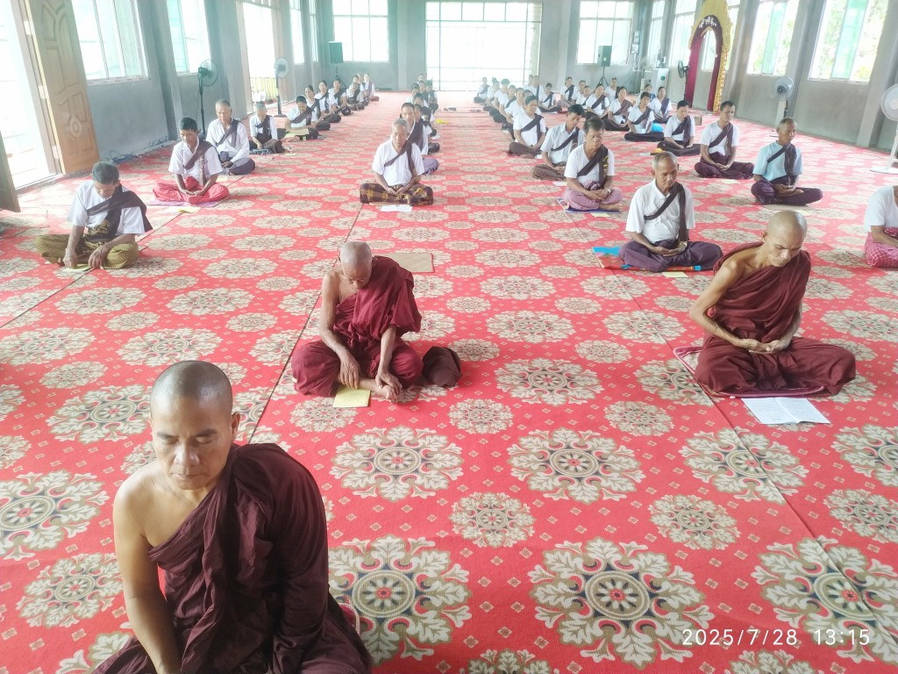
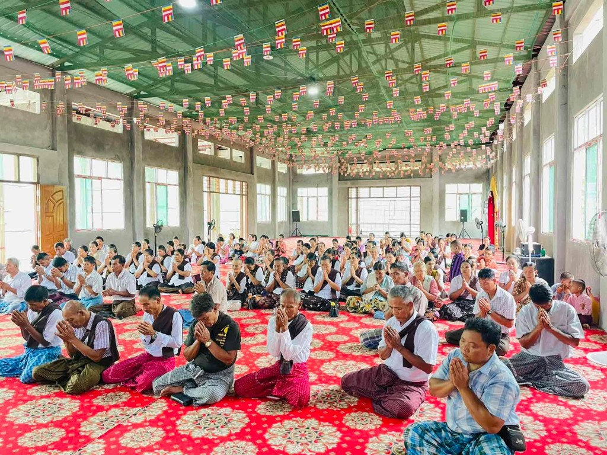
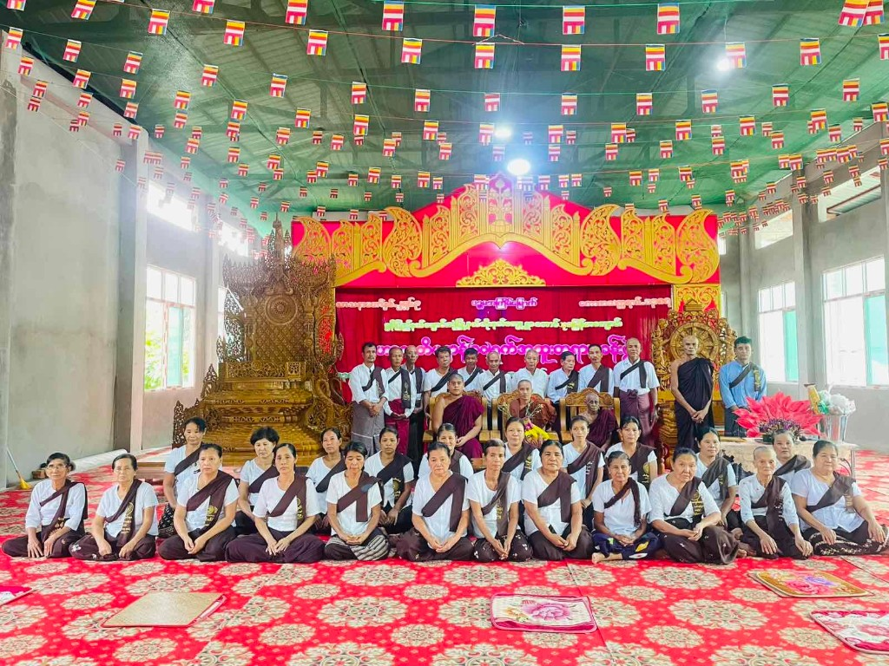
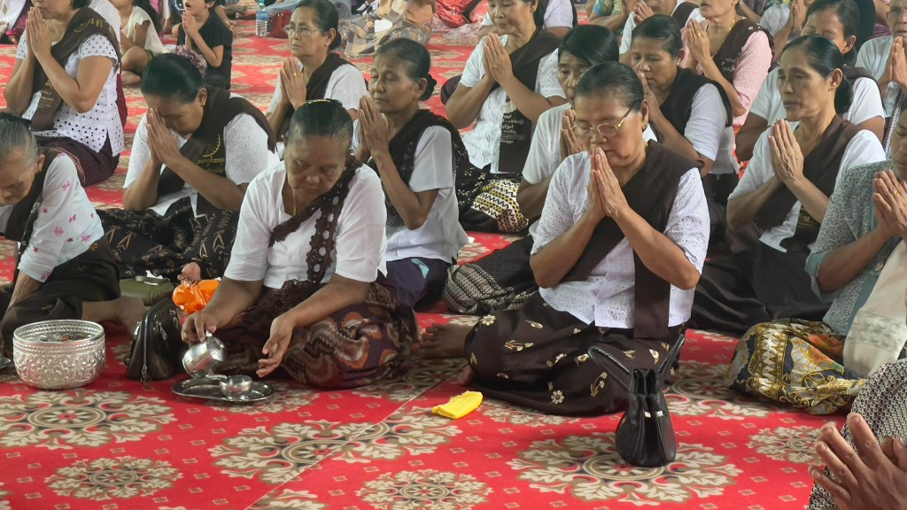
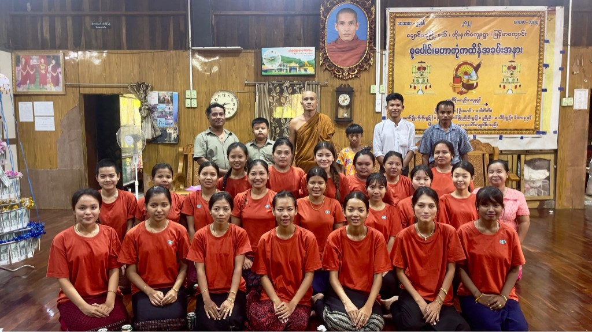

လိပ်စာ
မွန်ပြည်နယ် ချောင်းဆုံမြို့နယ် ဘိုးနတ်ကျေးရွာ
သာသနာအလင်းရောင် ပြန့်ပွားရာ
ကျောင်းဝင်းအတွင်း ပြုလုပ်သည့် ဘုရားပွဲများ၊ တရားနာပွဲများ၊ အသိပညာဖြန့်ဝေမှုများကို မျှဝေထားပါသည်။
အောင်သုခ မြန်မာကျောင်းသည် သာသနာရေးလုပ်ငန်းများ၊ ဘာသာရေးပွဲများ၊ လူငယ်ပညာပေးအစီအစဉ်များကို စဉ်ဆက်မပြတ် ဆောင်ရွက်နေသော ဘုန်းတော်ကြီးကျောင်းတစ်ခုဖြစ်ပါသည်။
မွန်ပြည်နယ် ချောင်းဆုံမြို့နယ် ဘိုးနတ်ကျေးရွာ






ဘုန်းတော်ကြီးကျောင်း ဆိုင်ရာ ကုသိုလ်ရေးလှုပ်ရှားမှုများတွင် ပါဝင်လိုပါက ကျောင်းသို့ တိုက်ရိုက်လာရောက်မေးမြန်းနိုင်ပါသည်။
📍 မွန်ပြည်နယ် ချောင်းဆုံမြို့နယ် ဘိုးနတ်ကျေးရွာ